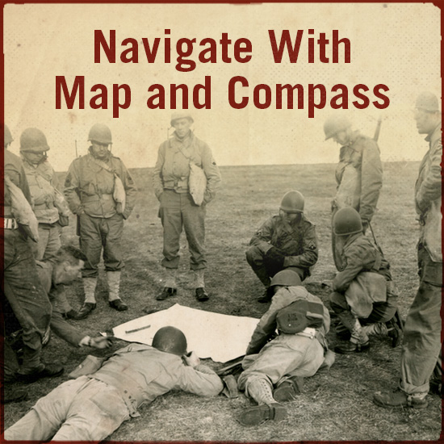
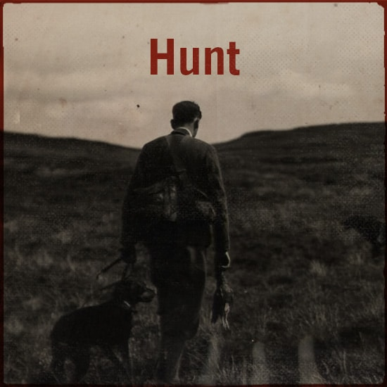

Skills
 Reading Books
Reading Books-  Navigate with Map and Compass
-  How to Hunt
 Listening to Music
Listening to Music
Hello! My name is Buchupalle Purna Tejeshwara Reddy, and I am a passionate and dedicated professional with a strong foundation in technical industries. With a background in Polytechnic in CSE and Arduino projects, I have honed my skills in various areas, including listening to music, reading books, talking with unknown people, researching new things, solo driving, and more. I have successfully contributed to several projects:
During my school days:
During my polytechnic studies:
Over the past few years, I have gained invaluable experience working with Yoyo Media Square Company, where I contributed to frontend work for the company's website. This experience helped me develop a keen eye for detail and a deep understanding of the technical landscape in Hyderabad. My approach to work is characterized by creativity, problem-solving abilities, and teamwork, and I am always eager to learn and adapt to new challenges.
In my free time, I enjoy discovering new things, working on potential patents, reading books, and listening to music. These activities help me stay balanced and inspired. I am excited to bring my expertise and enthusiasm to new opportunities and look forward to making meaningful contributions to the teams I work with.
Reading Books Listening to MusicContributed to frontend work for the company's website, developing a keen eye for detail and a deep understanding of the technical landscape in Hyderabad.
Detailed description of the new project and its impact.
"Tejeshwara is a highly skilled and dedicated professional. His ability to tackle complex problems with creative solutions has been a great asset to our team. His enthusiasm and positive attitude make him a pleasure to work with." – John Doe, Manager at Yoyo Media Square
"Tejeshwara's innovative thinking and dedication to continuous improvement are truly impressive. He consistently goes above and beyond to deliver exceptional results and is always willing to help his colleagues." – Michael Brown, Colleague at Yoyo Media Square
"Working with Tejeshwara on our project was a fantastic experience. He brings a high level of expertise and attention to detail, ensuring that every aspect of the project is handled with care and precision." – Jane Smith, Teacher at Montessori High School
"Tejeshwara's dedication to his studies and projects in the Polytechnic Department of CSE at Lovely Professional University is truly commendable. His innovative approach and problem-solving skills have greatly benefited our team." – Dr. Rajesh Kumar, Professor at Lovely Professional University
"Tejeshwara's contributions to our new project were outstanding. His technical expertise and ability to collaborate effectively made a significant difference." – Sarah Lee, Project Manager